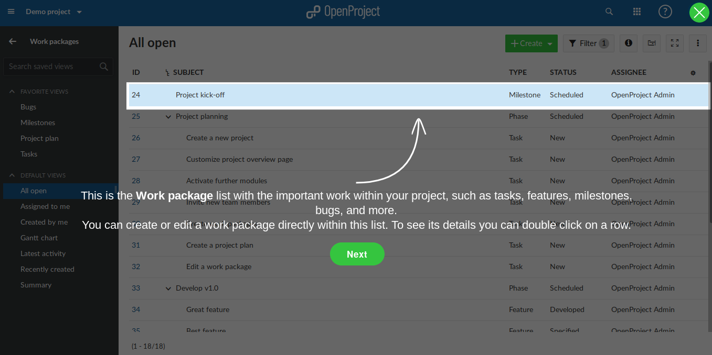
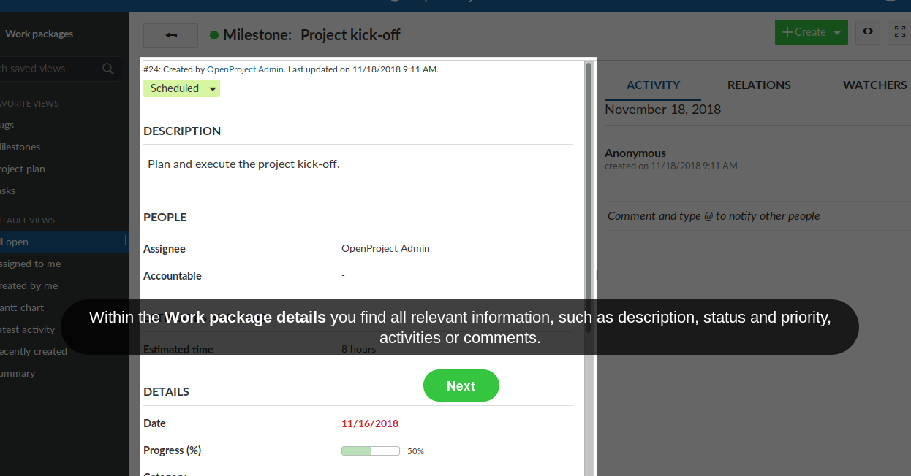
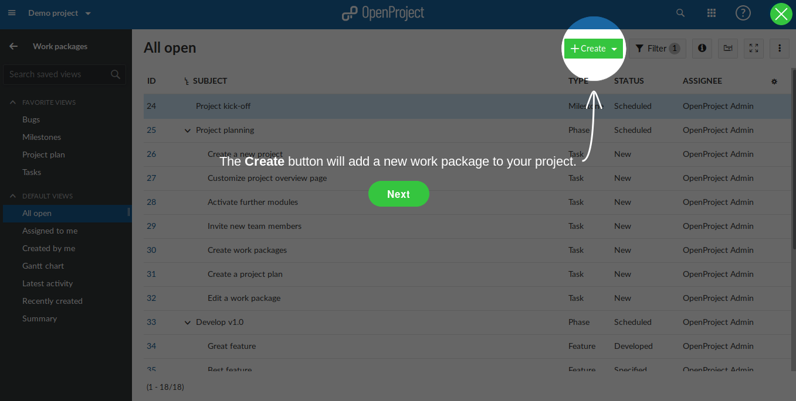
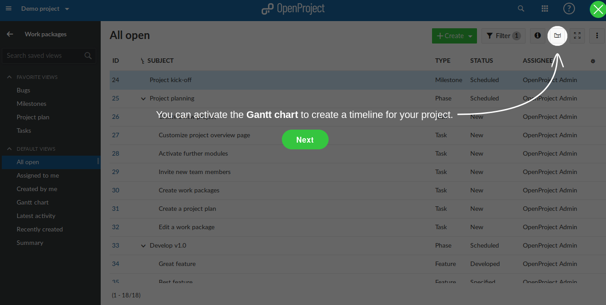

Openproject basic usage¶
The Home Page¶
The Projects List¶
The Work-Package¶
- The Work packagelist will show you all of your tasks, deatures, userstories, milestones, bugs, etc…
- 
- When you double click on work package, the details page will show you all relevant infomation, suck as description, status, relative …
- 
- You can create new work package by click on Create button on work package list view
- 
- To active gantt chart, click on gantt chart icon like picture blow:
- 